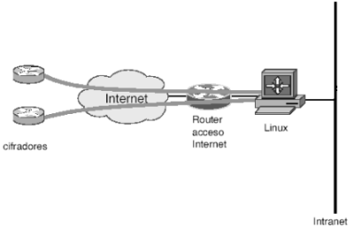

Uno de los planteamientos posibles consiste en la construcción de un terminador de túneles IPSec que además sirva de puerta de enlace o gateway de la propia red local. Adicionalmente, podría actuar como cortafuegos entre la misma e Internet.
El PC utilizado tendría dos interfaces de red distintas. Una de ellas estaría conectada directamente al encaminador de salida a Internet, y sería la interfaz que soportaría la creación y mantenimiento de los túneles IPSec con los terminadores de Telefónica. La otra conectaría nuestro PC con la red local de la universidad, de forma que el tráfico se redireccionase lógicamente entre ambas interfaces.
Este diseño es conceptualmente muy sencillo, pero tiene el hándicap de provocar cambios colaterales muy agresivos. Implica cambiar la infraestructura general de la red y probablemente causar inconvenientes a los usuarios de otros servicios que nada tienen que ver con éste, durante el periodo de pruebas.
|

|